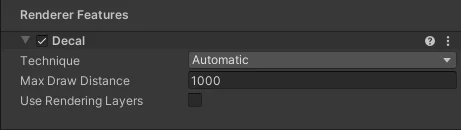

This section describes the properties of the Decal Renderer Feature.

Select the rendering technique for the Renderer Feature.
This section describes the options in this property.
Unity selects the rendering technique automatically based on the build platform. The Accurate G-buffer normals option is also taken into account, as it prevents normal blending from working correctly without the D-Buffer technique.
Unity renders decals into the Decal buffer (DBuffer). Unity overlays the content of the DBuffer on top of the opaque objects during the opaque rendering.
Selecting this technique reveals the Surface Data property. The Surface Data property lets you specify which surface properties of decals Unity blends with the underlying meshes. The Surface Data property has the following options:
Limitations:
This technique does not support the OpenGL and OpenGL ES API.
This technique requires the DepthNormal prepass, which makes the technique less efficient on GPUs that implement tile-based rendering.
This technique does not work on particles and terrain details.
Unity renders decals after the opaque objects using normals that Unity reconstructs from the depth texture, or from the G-Buffer when using the Deferred rendering path. Unity renders decals as meshes on top of the opaque meshes. This technique supports only the normal blending. When using the Deferred rendering path with Accurate G-buffer normals, blending of normals is not supported, and will yield incorrect results.
Screen space decals are recommended for mobile platforms that use tile-based rendering, because URP doesn’t create a DepthNormal prepass unless you enable Use Rendering Layers.
Selecting this technique reveals the following properties.
| Property | Description |
|---|---|
| Normal Blend | The options in this property (Low, Medium, and High) determine the number of samples of the depth texture that Unity takes when reconstructing the normal vector from the depth texture. The higher the quality, the more accurate the reconstructed normals are, and the higher the performance impact is. |
| Low | Unity takes one depth sample when reconstructing normals. |
| Medium | Unity takes three depth samples when reconstructing normals. |
| High | Unity takes five depth samples when reconstructing normals. |
The maximum distance from the Camera at which Unity renders decals.
[!NOTE] If you enable Adaptive Performance in the URP asset, it can override Max Draw Distance so the draw distance is lower.
Select this check box to enable the Rendering LayersA layer that defines how specific effects are applied across different objects. Rendering layers don’t define draw order. They’re selection groups you assign objects to. Rendering layers let lights, decals, shadows, and custom passes include or ignore specific objects.
See in Glossary functionality.
If you enable Use Rendering Layers, URP creates a DepthNormal prepass. This makes decals less efficient on GPUs that implement tile-based rendering.